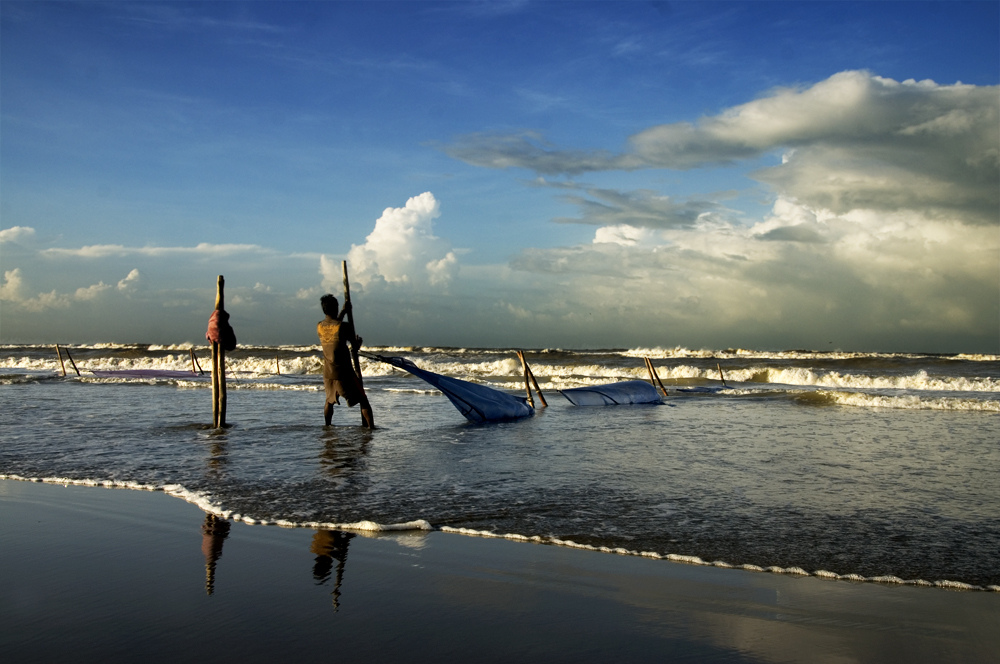
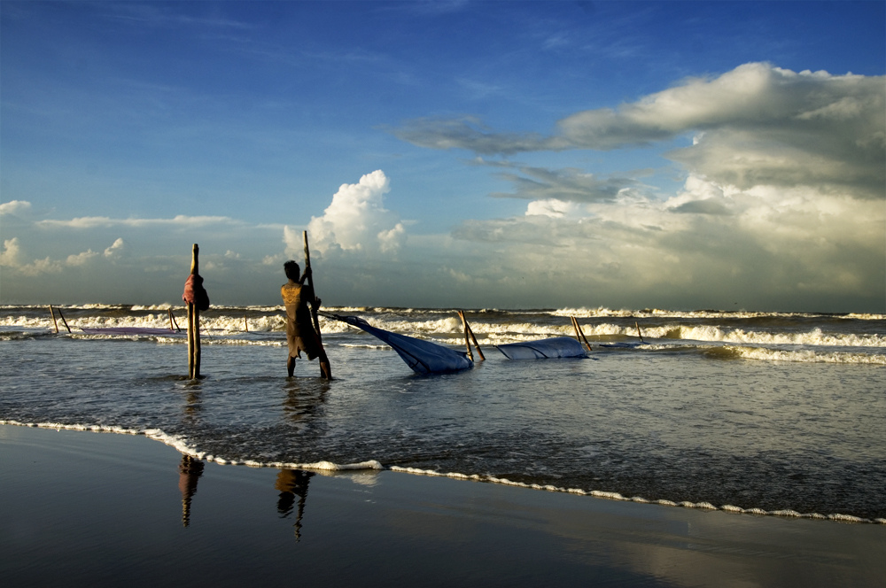
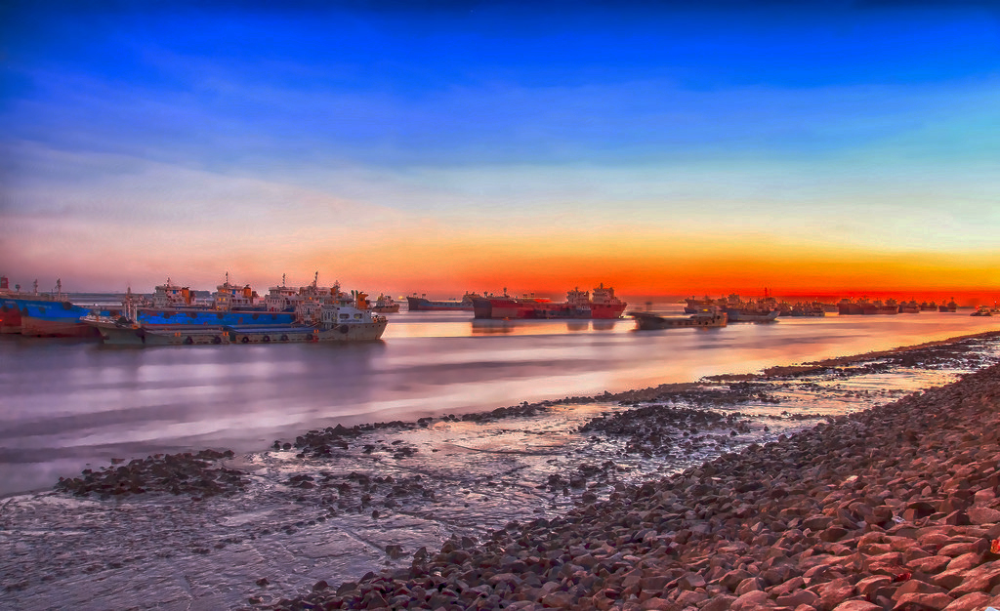
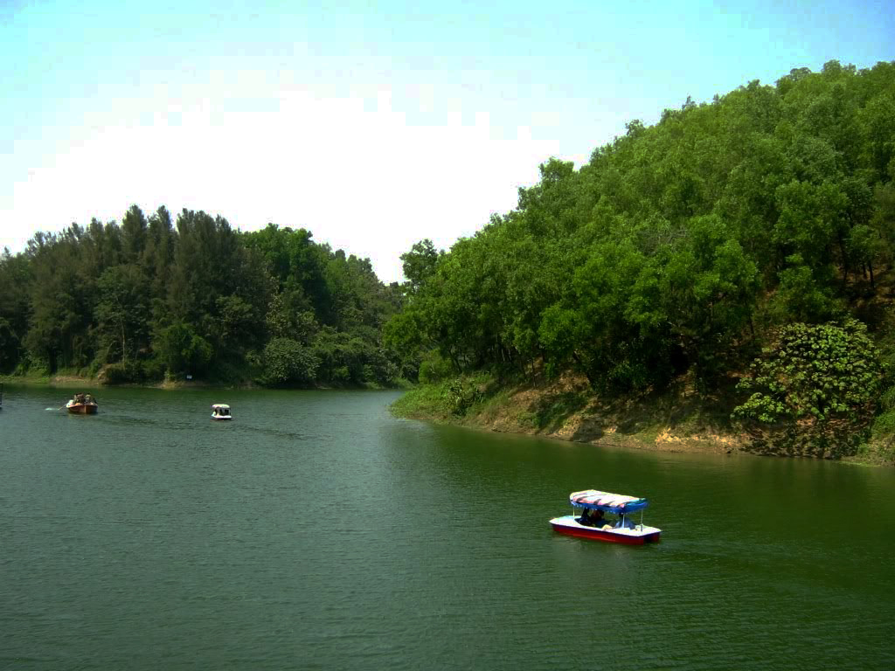
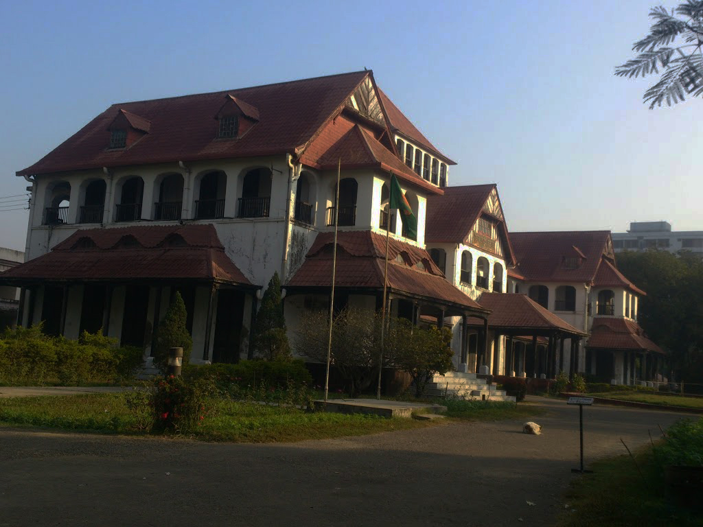
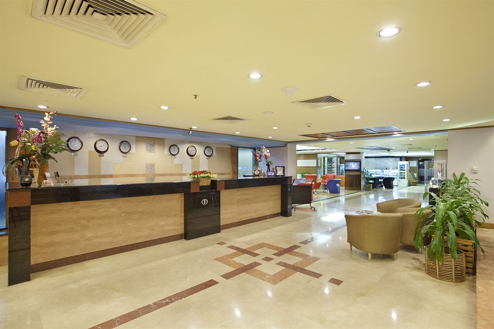
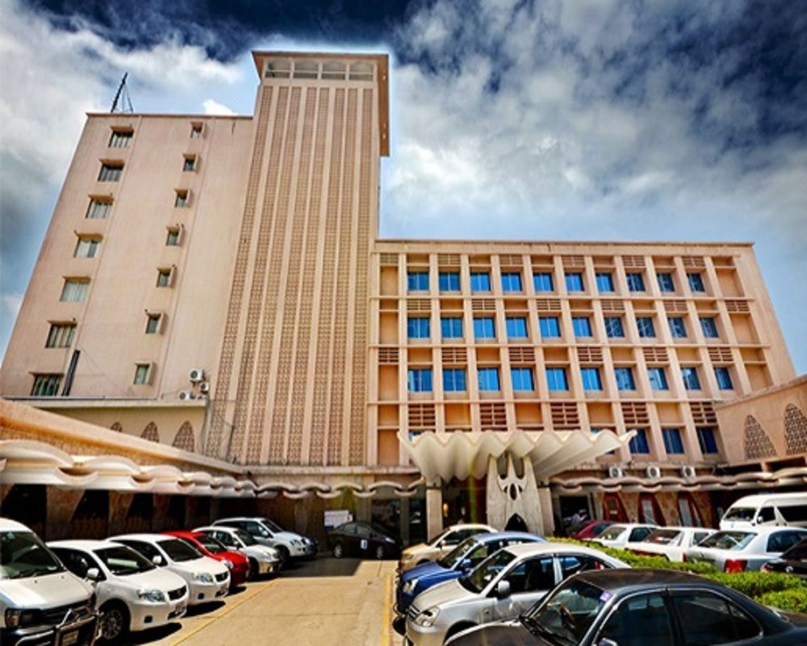
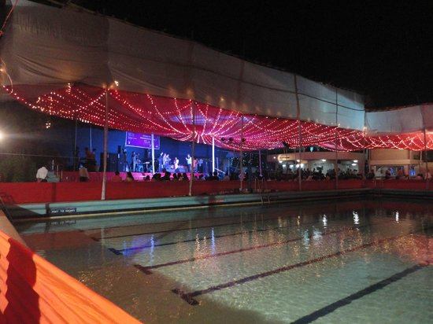

CHITTAGONG
EXPLORE CHITTAGONG
ABOUT
Chittagong /tʃɪtəɡɒŋ/ (Bengali: চট্টগ্রাম Bengali pronunciation: [tʃɔt̠t̠ɔgram]) is a major coastal seaport city and financial centre in southeastern Bangladesh. The city has a population of more than 2.5 million[1] while the metropolitan area has a population of 4,009,423 at the 2011 Census,[1] making it the second largest city in the country. It is the capital of an eponymous district and division. The city is located on the banks of the Karnaphuli River between the Chittagong Hill Tracts and the Bay of Bengal. Much of Chittagong Division is located within the ecological Indo-Burma zone on the boundary of the India Plate and Burma Plate. This makes Chittagong the crossroads of the Indian subcontinent and Southeast Asia. The port city has been known by various names in history, including Chatigaon, Chatigam, Chattagrama, Islamabad, Chattala, Chaityabhumi and Porto Grande De Bengala. The natural harbour of Chittagong is an ancient gateway to the region of Bengal. It was noted as one of the largest Eastern ports by the Roman geographer Ptolemy in the 1st century. As part of the rich seafaring tradition of the Bengali people, coastal Chittagong was settled and ruled by Indian and Bengali kingdoms. Arab traders saw well-developed currency, banking and shipping in Chittagong during the 9th century. Early cosmopolitan Muslims established dominance over the port as an entrepot of maritime trade,[5] while Arakan, Bengal and Tripura competed for control of the wider hinterland. Muslim conquest took place in the 14th century. Chittagong became the principal port of the Bengal Sultanate. It was used by several leading medieval global explorers, including Ibn Battuta and Niccolò de' Conti. Later, Mrauk U, with assistance from Portuguese trading posts, gained control of the area. The Mughal conquest of Chittagong reestablished Bengali control and ushered an era of stability and trade. The city was renamed as Islamabad. This diverse history is reflected in the rural Chittagonian dialect of Bengali, which has a nearly 50% Arabic-origin vocabulary, as well as Persian and Portuguese loanwords.[6] Ceded to the British East India Company in 1760, Chittagong became the chief port of Eastern Bengal and Assam under the British Raj, as well as a hub of railways. A notable anti-colonial uprising took place in 1930. It was an important base for Allied Forces during the Burma Campaign in World War II. Rapid industrialization followed the war, as Chittagong became part of East Pakistan. During Bangladesh’s liberation war in 1971, Chittagong was site of the country’s declaration of independence. Modern Chittagong is an important economic hub in South Asia. It is home to the Chittagong Stock Exchange and many of Bangladesh's oldest and largest companies. The Port of Chittagong is the largest international seaport on the Bay of Bengal.[7] It is the largest base of the Bangladesh Navy. However, despite having a high and growing urban per capita GDP in South Asia[8] and being one of the fastest growing cities in the world,[9] it has a poverty rate of 11.3%, as of 2010. Chittagong is reputed as a relatively clean city, but still confronts substantial logistical and socioeconomic problems. The mountainous hinterland of Chittagong is the most biodiverse region in Bangladesh, with 2000 endemic plants and various critically endangered wildlife.
CLIMATE
Chittagong lies at 22°22′0″N 91°48′0″E. It straddles the coastal foothills of the Chittagong Hill Tracts in southeastern Bangladesh. The Karnaphuli River runs along the southern banks of the city, including its central business district. The river enters the Bay of Bengal in an estuary located 12 kilometres (7.5 mi) west of downtown Chittagong. Mount Sitakunda is the highest peak in Chittagong District, with an elevation of 351 metres (1,152 ft).[41] Within the city itself, the highest peak is Batali Hill at 85.3 metres (280 ft). Chittagong has many lakes that were created under Mughal rule. In 1924, an engineering team of the Assam Bengal Railway established the Foy's Lake.[41] Under the Köppen climate classification, Chittagong has a tropical monsoon climate (Am). Chittagong is vulnerable to North Indian Ocean tropical cyclones. The deadliest tropical cyclone to strike Chittagong was the 1991 Bangladesh cyclone, which killed 138,000 people and left as many as 10 million homeless.
AREAS OF CHITTAGONG
PATENGA BEACH
NEVAL SEA BEACH

KARNAFULI RIVER
FOY'S LAKE
ZIA MEMORIAL MUSEUM
ACCOMODATIONS IN CHITTAGONG
RADISSON
PENINSULA
AGRABAD
CTGCLUB